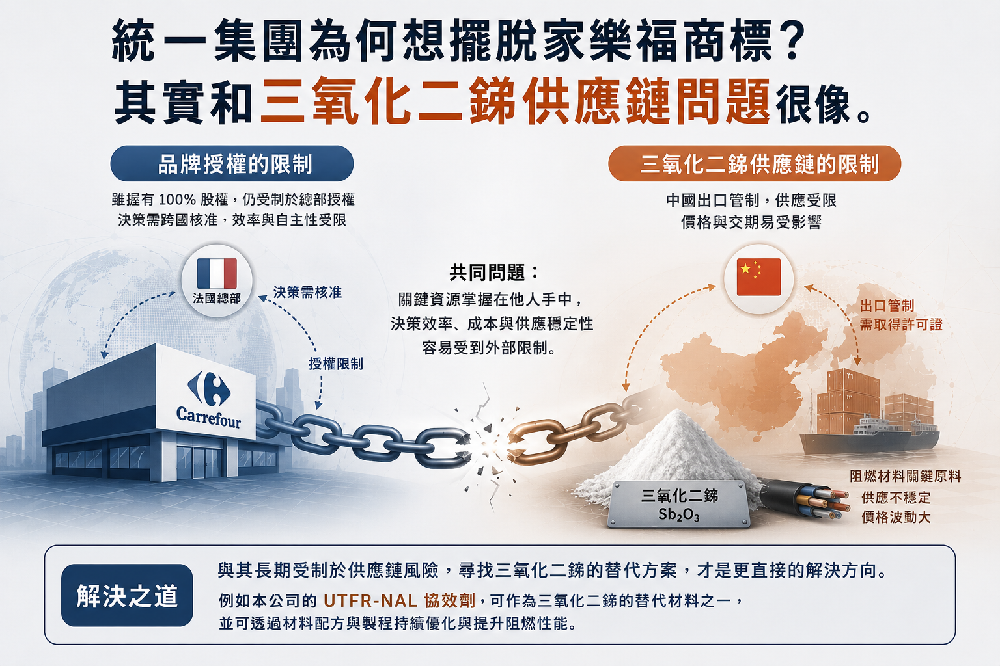

統一集團為何想擺脫家樂福商標？其實和三氧化二銻供應鏈問題很像
2026-05-10 撰寫

2023 年家樂福量販店正式被統一集團收購，統一集團雖然握有 100% 股權，但若持續沿用家樂福品牌，許多決策仍需與法國總部跨海溝通與核准。統一集團董事長羅智先認為，相較於品牌授權費，更大的問題其實是決策效率與經營自主性會受到限制。
類似情況也出現在大潤發。大潤發原先由台灣潤泰集團與法商合資經營，2022 年在被全聯收購經營權後，也逐步更改商標與品牌名稱，由「大潤發」轉型為「大全聯」。
這類案例背後，其實都反映出同一個問題：當品牌、技術或關鍵資源掌握在他方手中時，企業的決策效率、成本與供應穩定性，往往容易受到外部限制。
-
而類似的情況，近期也出現在中國對銻等關鍵材料的出口限制上。中國為反制美國晶片政策，對銻礦、金屬銻及氧化銻等高純度材料實施出口管制，相關出口皆需取得許可證。由於三氧化二銻是塑膠與電纜產業重要的阻燃材料，供應受限後，市場便容易受到價格與交期影響。
雖然目前仍可透過第三國，例如越南，間接取得中國銻原料，但供應鏈等於多了一層中介，不僅價格提高，時間與穩定性也更容易被外部因素牽制。這就像繼續沿用家樂福品牌，表面上仍能運作，但許多事情都需要經過額外溝通與等待，效率自然下降。
因此，與其長期受制於供應鏈風險，提早布局三氧化二銻替代方案，或許才是更直接的解決方向。例如本公司的 UTFR-NAL 協效劑，即可作為降低三氧化二銻依賴的材料方案之一。至於阻燃性能的部分，則可透過材料配方與製程持續優化與提升。
← 返回產業資訊列表